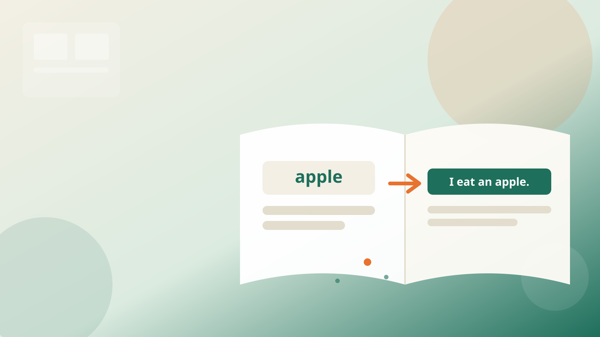
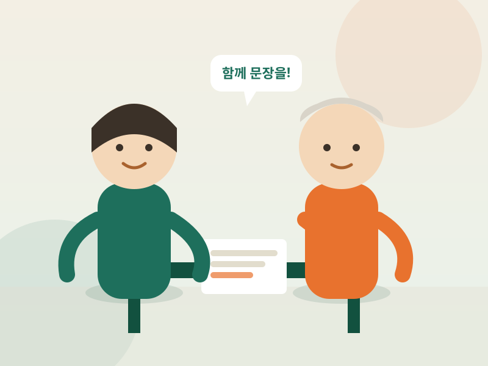
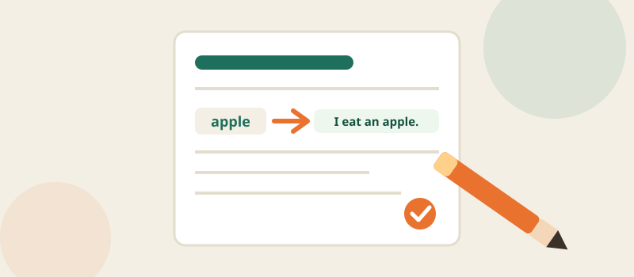
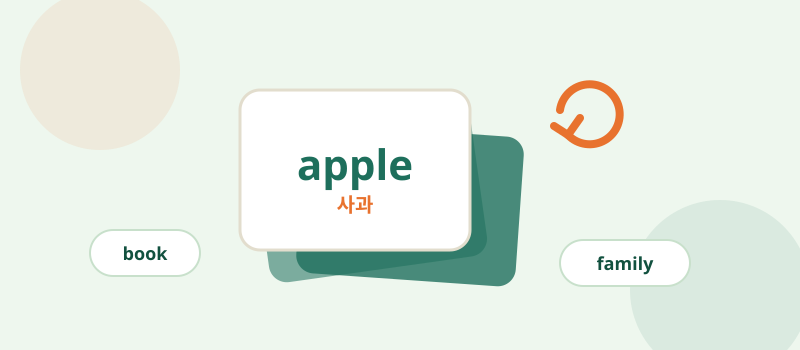

방문형 1:1 맞춤 영어 학습
단어에서 문장으로,
시니어 맞춤 방문 영어 학습
이동 없이 집에서 받는 나만의 맞춤 영어 수업 — 단어 암기를 넘어
문장을 만드는 힘을 함께 길러갑니다.
- 이동 없이 집에서 편하게
- 20년 이상 경력의 영어교육 전문가
- 단어를 문장으로 만드는 학습법
BRAND STORY
왜 시니어 영어 방문학습인가요?
단어와 문법은 열심히 외우지만 정작 문장을 만들지 못하는 현실,
배우고 싶은 의지는 있으나 몸이 불편해 학원 방문 자체가 부담스러운 액티브 시니어.
이 두 가지 고민에서 시작되었습니다.
대표자 이야기
2000년부터 20년 넘게 영어 교육 현장에 있었습니다. 유아부터 고등학생까지 지도했고, 특수학교·특수학급을 포함해 유치원부터 고등학교까지 10년간 수업했습니다.

OUR SERVICE
맞춤 방문 학습지 & 영어단어카드
정해진 시간에 선생님이 집으로 방문해, 그날 배운 단어를 학습지 안에서 직접 문장으로 만들고,
단어카드로 새로 익힌 단어를 반복해서 다집니다.
단어를 외우는 데서 끝나지 않고, 배운 단어를 바로 문장으로 해보는 과정을 매 회차 반복하는 방식입니다.

방문 학습지 활용
선생님과 함께 그날 배운 단어를 실제 문장으로 만들어보는 맞춤형 학습지입니다.

영어단어카드 활용
반복 학습으로 새로 익힌 단어를 오래 기억할 수 있도록 돕는 전용 단어카드입니다.
FOR WHOM
이런 분께 추천합니다
추천 상황
- 학원까지 이동이 부담스러운 액티브 시니어
- 영어를 처음 시작하거나, 다시 시작하고 싶은 분
- 단어는 알지만 문장으로 표현하는 게 어려운 분
- 정기적인 방문으로 꾸준한 학습 습관을 만들고 싶은 분
이런 경우는 안내가 필요합니다
- 온라인(비대면) 화상 수업만 원하시는 경우
- 원어민 강사 수업을 원하시는 경우
- 여러 명이 함께하는 그룹 스터디 형태를 원하시는 경우
※ 위 항목은 현재 확인된 서비스 범위에 포함되어 있지 않아 별도 안내가 필요하며, 상담 시 다를 수 있습니다.
WHY IT MATTERS
데이터로 보는 시니어 영어 학습
65세 이상 고령자 중 외출 시 불편을 경험하는 비율. 노인복지관까지 도보 이동이 어렵다는 응답도 30.3%에 달합니다.
출처: 한국보건사회연구원 「노인실태조사」(2023년 발표, 2026년 조사는 결과 미발표)
성인 평생학습 참여율입니다. 배우고 싶은 의지가 있어도 실제 참여로 이어지기 쉽지 않은 현실을 보여줍니다.
출처: 교육부·한국교육개발원 「평생학습개인실태조사」(2025년 발표, 현재 확인 가능한 가장 최근 공식 통계)
대표자는 20년 이상 영어교육 현장에서 활동해왔습니다. 유아부터 고등학생, 특수학교·특수학급까지 폭넓은 지도 경험을 갖추고 있습니다.
출처: 대표자 자체 이력
HOW IT WORKS
이용 방법
상담 신청
전화 또는 방문 상담 신청
무료 상담
목표와 수준 파악 후 맞춤 커리큘럼 제안
방문 학습 시작
맞춤 학습지 + 단어카드로 정기 방문 수업
FAQ
자주 묻는 질문
네, 나이 제한 없이 시작하실 수 있습니다. 개인의 학습 속도에 맞춰 진도를 조절합니다.
단어카드로 반복해서 단어를 익히고, 학습지로 그 단어를 실제 문장으로 만들어보는 방식으로 진행합니다.
선생님이 직접 자택으로 방문해 학습지와 단어카드를 활용한 대면 방식으로 진행합니다.
새로운 언어를 배우는 활동이 두뇌 자극에 도움이 된다는 일반적인 인식은 있습니다. 다만 특정 질환의 예방이나 치료 효과를 보장하는 것은 아니며, 건강 관련 궁금증은 전문가와 상담하시길 권합니다.
네, 알파벳과 기초 발음(파닉스)부터 시작하는 맞춤 커리큘럼으로 진행되며, 학습지 수준도 개인에 맞게 조절합니다.
네, 혼자 학습할 때 어려웠던 꾸준함의 문제를 정기적인 방문 학습으로 함께 보완해 드립니다.
방문 가능 지역은 상담을 통해 확인해 드립니다. 전화 또는 방문 상담으로 문의해 주세요.
네, 일상 상황에서 실제로 쓸 수 있는 문장을 만들어보는 방식으로 학습지를 구성합니다.
방문 학습지와 단어카드가 복습 교재 역할을 겸합니다. 세부 구성은 상담 시 안내해 드립니다.
정확한 비용은 상담을 통해 안내해 드립니다.
지금 바로 상담을 신청해보세요
전화 상담과 방문 상담 모두 가능합니다.
상담 신청서 작성
아래 내용을 남겨주시면 순차적으로 연락드립니다.
상담 신청이 완료되었습니다.
순차적으로 연락드리겠습니다. 감사합니다.